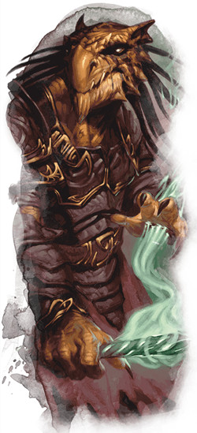

Lignée draconique
Les ensorceleurs sont des mages qui tirent leur pouvoir d'eux-mêmes. La plupart ne possèdent aucune formation et agissent simplement par instinct. Si vous cherchez des traits de caractère lorsque vous créez votre ensorceleur, pensez aux enfants à l'école qui n'ont jamais eu à étudier car ils étaient dotés d'un talent naturel. Le cliché est que ces personnes sont arrogantes, mais peut-être ont-ils tout simplement peur, peur de perdre leur avantage, de faire un faux pas et qu'on pense qu'ils ne sont qu'une escroquerie. Bien sûr, l'arrogance et la peur peuvent coexister, et c'est même souvent le cas...
Ces traits se prêtent bien à des arcs narratifs forts de découverte de soi et de croissance personnelle. Voir un personnage apprendre à se débarrasser de sa fierté et de sa peur en cultivant l'humilité et l'empathie (comme le prince Zuko d'Avatar, le dernier maître de l'air) peut être incroyablement puissant, à la fois pour vous et vos amis. Pensez alors à adapter votre sélection de sorts à cet arc. Comme vous apprenez de nouveaux sorts lorsque vous gagnez des niveaux (et que vous pouvez même échanger un ancien sort pour un nouveau une fois par niveau), vous pouvez mécaniquement simuler une croissance graduelle des personnages.
Tous les ensorceleurs ont également dans leur lignée un pouvoir ancien et mystérieux qui est la source de leur magie. En tant qu'ensorceleur de la lignée draconique, vous savez que la magie innée des dragons coule dans vos veines, vous donnant accès à vos sorts ainsi qu'à une multitude de pouvoirs draconiques. Pensez bien à cela lors de la création de votre personnage et de son histoire. Va-t-il vouloir retrouver son mystérieux ancêtre ou sait-il déjà qui il est, ayant été élevé par sa grand-mère, une dragonne ?
Capacités de la lignée draconique
La lignée draconique est l'origine magique la plus emblématique, utilisant l'archétype de la bête magique, le dragon, comme source de votre pouvoir inné. L'ensorceleur gagne quatre capacités de sous-classe aux niveaux 1, 6, 14 et 18. En résumé, ces capacités de sous-classe permettent :
- De parler avec des dragons de manière plus convaincante que les autres humanoïdes.
- De gagner une armure naturelle (écailles de dragon) et des points de vie améliorés.
- D'améliorer vos dégâts avec un type de dégâts spécifique et de gagner la capacité de résister à ce type de dégâts.
- De voler grâce à des ailes draconiques.
- De terrifier les êtres inférieurs simplement de par votre propre présence draconique.
Avantages de la lignée draconique
La lignée draconique est un peu unique en son genre car, bien qu'elle soit la sous-classe d'ensorceleur la plus emblématique, elle tend à renforcer les faiblesses inhérentes à la classe au lieu de renforcer ses forces existantes. Par exemple, en tant qu'ensorceleur vous ne gagnez aucune maîtrise d'armure et devriez donc normalement devoir lancer armure de mage pour améliorer votre classe d'armure, ce qui implique non seulement de dépenser un précieux emplacement de sort mais aussi d'utiliser l'un de vos non moins précieux sorts connus pour apprendre armure de mage. Cependant, la première capacité de l'origine magique de la lignée draconique vous confère les effets d'armure de mage de façon permanente en augmentant votre CA à 13 + votre modificateur de Dextérité. Et cette même capacité augmente également vos points de vie médiocres à chaque niveau.
Mieux encore, ce schéma d'améliorations persiste au fur et à mesure que vous progressez, en corrigeant vos points faibles et en doublant de temps en temps vos forces. Ailes de dragon vous évite d'avoir à apprendre et à lancer vol, bien que cette capacité n'affecte pas les autres. Affinité élémentaire encourage la spécialisation dans un élément particulier, celui associé à votre ancêtre draconique, en améliorant vos dégâts lorsque vous lancez des sorts de ce type de dégâts élémentaires.
La lignée draconique ainsi permet d'être un ensorceleur polyvalent et grandement multiclassable. Multiclassez vous avec paladin si vous voulez ajouter de l'acier à votre ensorceleur, ou avec occultiste pour une touche plus occulte, comme si vous ne pouviez pas tout miser sur votre talent inné, ce qui expliquerait que vous vous êtes tourné vers un patron.
Inconvénients de la lignée draconique
La plus grande force de la lignée draconique est également sa plus grande faiblesse. Dans la mesure où elle corrige certains de vos défauts, elle ne permet pas de booster vos capacités les plus puissantes à leur plein potentiel. De plus, les inconvénients qu'elle tente d'équilibrer ne sont pas les pires. De loin, la plus grande faiblesse de l'ensorceleur est le peu de sorts auxquels vous avez accès, car si la taille de votre liste de sorts est comparable à celle de la plupart des autres classes de lanceurs de sorts (à l'exception du magicien bien sûr), le nombre de sorts que vous connaissez est vraiment insuffisant. C'est un inconvénient intrinsèque à la classe d'ensorceleur et ce qui rend difficile à jouer la lignée draconique.
Les sous-classes d'ensorceleurs du Xanathar’s Guide to Everything, plus récentes, essayent au moins un peu de renforcer la sélection de sorts limitée de l'ensorceleur en offrant un sort supplémentaire en relation avec le thème de la sous-classe. Si vous êtes MD et que l'ensorceleur de la lignée draconique de votre groupe en bave, envisagez d'ajouter gratuitement le sort souffle du dragon à sa liste de sorts connus au niveau 6. Ce n'est pas forcément nécessaire (les limitations inhérentes à la classe d'ensorceleur suscitent la créativité chez les joueurs) mais il vous incombe de rendre le jeu amusant pour tout le monde.
Exemple de personnage
En tant qu'ensorceleur, vous devez choisir votre origine magique dès le niveau 1. Si cela signifie que vous tirez parti des avantages de votre sous-classe dès le début, cela signifie également que vous n'aurez pas le temps de vous installer dans votre rôle. C'est donc une grosse décision à prendre avec soin !
Vous devriez choisir une race qui améliore votre Charisme et votre Dextérité ou votre Constitution. En tant qu'ensorceleur, le Charisme est votre caractéristique la plus importante. Vos sorts sont alimentés par votre confiance en vous-même, votre personnalité et votre détermination, toutes représentées par votre Charisme. Ensuite, même si vous êtes un lanceur de sorts, la lignée draconique vous encourage à jouer de manière imprudente. Améliorer votre Dextérité (pour une meilleure Classe d'Armure) ou votre Constitution (pour obtenir plus de points de vie) est donc un excellent choix. La Constitution permet en plus d'améliorer la concentration des sorts qui le requièrent, or comme vous risquez de prendre des coups de temps en temps, pouvoir maintenir sa concentration est important. Les tieffelins font d'excellents ensorceleurs car ils renforcent votre Charisme et donnent également quelques sorts supplémentaires que vous pouvez lancer en tant que capacité raciale. Les demi-elfes sont également formidables car ils donnent un gros boost en Charisme et permettent d'augmenter deux autres caractéristiques de votre choix. Les halfelins pied-légers sont à la fois adroits et charismatiques, et leurs autres traits raciaux sont intéressants. Si vous ne craignez pas de haïr le soleil, jouer un drow est attrayant car ils ont un coup de pouce en Charisme et en Dextérité, ainsi que quelques sorts supplémentaires. Enfin, comme toujours, la variante de l'humain n'est jamais un mauvais choix.
Pour l'équipement, étant donné que vous choisirez probablement au moins un sort mineur infligeant des dégâts à distance, vous pouvez en toute sécurité abandonner l'arbalète légère au profit d'une arme courante, comme un bâton ou une dague. Le choix entre une sacoche à composantes ou un focaliseur arcanique est purement une question de saveur, selon que vous préférez utiliser une baguette magique ou une patte de grenouille pour convertir la puissance des arcanes en sorts. Si vous pensez passer beaucoup de temps dans des donjons, prenez un sac d'exploration souterraine, sinon un sac d'explorateur. Enfin, vous obtenez deux dagues supplémentaires. Cool !
Sorts
Le choix des sorts est un dilemme pour tout lanceur de sorts, mais vous devez être particulièrement attentif. Les ensorceleurs n'apprenant pas beaucoup de sorts au cours de leur carrière, vous allez vous familiariser avec car vous allez les utiliser souvent. À moins, bien sûr, que vous ne profitiez pleinement de l'échange de sorts quand vous gagnez un niveau. En premier lieu, choisissez un sort mineur de dégâts qui soit en synergie avec votre ascendance draconique.
- Pour les dégâts d'acide, choisissez aspersion d'acide
- Pour les dégâts de froid, choisissez rayon de givre
- Pour les dégâts de feu, choisissez trait de feu
- Pour les dégâts d'éclair, choisissez poigne électrique
- Pour les dégâts de poison, choisissez bouffée de poison
Complétez ensuite pour avoir un sort mineur de dégâts à distance, un sort mineur de dégâts au contact et deux autres de votre choix, ce qui donne ainsi vos quatre sorts mineurs du niveau 1.
Une fois les sorts mineurs choisis, vous devez maintenant sélectionner deux sorts connus de niveau 1. Vous apprendrez un nouveau sort à chaque niveau jusqu'au niveau 10, puis un nouveau sort tous les deux niveaux jusqu'au niveau 17, pour ensuite cesser d'apprendre des sorts. Essayez de choisir un sort offensif et un sort défensif ou social, selon la manière dont vous voulez jouer votre personnage. Le type de dégâts des sorts offensifs est indiqué pour vous aider à choisir celui qui convient le mieux à votre Ancêtre dragon. Cette liste n'est toutefois là que pour vous aider à démarrer si vous jouez un ensorceleur de la lignée draconique pour la première fois. Avec l'expérience, vous pouvez bien entendu choisir d'autres sorts.
- Mains brûlantes (offensif ; feu)
- Charme-personne (social)
- Couleurs dansantes (défensif)
- Déguisement (social)
- Projectile magique (offensif ; force)
- Trait ensorcelé (offensif ; éclair)
- Bouclier (défensif)
Si vous jouez avec le Xanathar’s Guide to Everything dans votre campagne, éclair de chaos est un sort indispensable. Orbe chromatique ne figure pas sur la liste, malgré son incroyable polyvalence, car vous devez posséder un diamant d'une valeur de 50 po pour le lancer, ce qui est cher pour un personnage de niveau 1. De toute façon, éclair de chaos convient généralement mieux à un ensorceleur.
Métamagie
La métamagie est votre as caché. La magie coule dans votre corps et vous pouvez dévier son courant d'une manière que d'autres lanceurs de sorts peuvent à peine comprendre. Lorsque vous atteignez le niveau 3, vous pouvez choisir deux des huit options différentes de métamagie. Les points de sorcellerie que vous avez gagnés au niveau 2 ne pouvaient, jusqu'à présent, n'être utilisés que pour récupérer vos emplacements de sorts dépensés. Maintenant, vous pouvez les utiliser pour rendre vos sorts encore plus puissants ! Voici les options recommandées :
Sort intensifié. Cette option vous permet d'imposer un désavantage sur l'un des jets de sauvegarde de vos sorts. C'est intéressant pour mains brûlantes, mais c'est encore mieux une fois que vous avez accès à des sorts comme immobilisation de personne ou suggestion.
Sort accéléré. Cette option de métamagie est idéale pour les ensorceleurs qui infligent des dégâts, mais notez bien que si vous lancez un sort de niveau en tant qu'action bonus, le sort que vous lancez par une action doit être un sort mineur. Et au-delà des dégâts bruts, Sort accéléré brille vraiment en vous permettant de prendre l'action Se cacher, Se désengager ou d'effectuer un autre type d'action sans devoir prendre Lancer un sort. C'est un gros avantage lorsque vous êtes entouré d'ennemis et que vous ne voulez pas passer votre tour à ne prendre que l'action Se désengager pour fuir.
Sort jumeau. Une autre bonne option pour les joueurs offensifs, très utile aussi pour améliorer vos alliés [buff] ou affaiblir vos ennemis [debuff]. Hâte rend ainsi deux alliés plus rapides, et immobilisation de personne peut immobiliser deux ennemis pour le prix d'un. Notez que vous ne pouvez utiliser Sort jumeau qu'avec des sorts qui ne ciblent qu'une seule créature. C'est donc impossible avec boules de feu, par exemple, puisqu'il cible une zone et non pas une créature.
Sort prévenant. Si vous envisagez de lancer boules de feu mais ne voulez pas toucher votre groupe, cette option vous aidera à éviter les dommages collatéraux.
Aux niveaux supérieurs
Une fois que vous avez atteint le niveau 6, il est très important que vos sorts de dégâts soient alignés sur le type de dégâts de votre Ancêtre dragon. Entre-temps, vous gagnerez soit des Améliorations de caractéristique, soit des dons, au niveau 4 puis tous les quatre niveaux. Commencez par monter votre Charisme à 18 ou 20, puis jetez un coup d'œil à quelques-uns des dons à votre disposition. Adepte des éléments est idéal pour résister aux dégâts des créatures qui sont fortes contre le type de dégâts de votre Ancêtre dragon. Lanceur de rituels vous procurera quelques sorts de rituels (qu'un ensorceleur ne peut pas lancer naturellement en tant que rituels) comme appel de familier, monture fantôme ou respiration aquatique, en fonction des besoins de votre campagne.
Basé sur un article de James Haeck, traduit par blueace